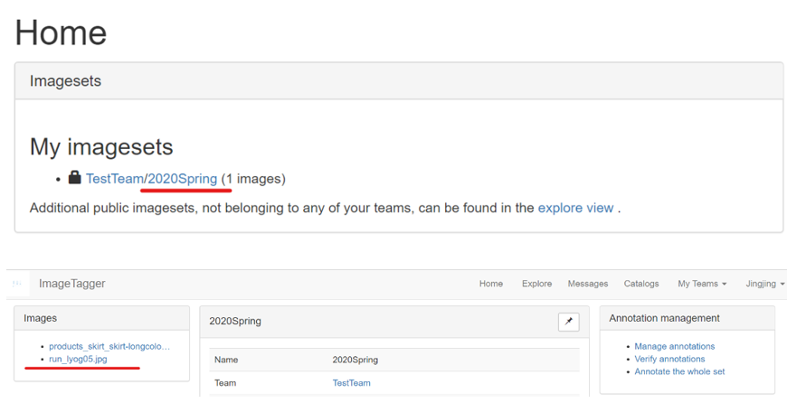

Quick Look of my Project
Fashion Deep Blue research
1.AI-Designer（used to call Dali-Brush）
DCGANs:Deep Convolution Generative Adversarial Networks
Reference: UNSUPERVISED REPRESENTATION LEARNING WITH DEEP CONVOLUTIONAL GENERATIVE ADVERSARIAL NETWORKS
GANs provide an attractive alternative to maximum likelihood techniques. However, GANs have been known to be unstable to train, often resulting in generators that produce nonsensical outputs. Combining CNN and GAN succeeded in dealing with this problem. Author used this GAN to produce pictures of faces and rooms. Thanks to the high quality training pictures provided by our French designer Agnes, we have a good result in art paintings.
Please! Please! Please click it 👆 Please~
This is an example of using the AI print created by GANs
2. Labelling online system
We made the tagging system online which means in the future we want to let more designers to use our system.
Just click the link and have a try. Account name: Jingjing Password: jj123456 Become our first generation user and give me some advice.👇
Firstly, click the imageSet 2020Spring. Then click any pic. Click Tag L0 -> Tag L1 -> Tag L2

The uses of tagging system online：
1 Bounding Box： Database stores coordinates of bounding boxes. After tagging this products，these pictures will become the training data set to do the object recognition. In the future, I will add landmarks tagging.
2 Fashion Index：The right part made the category work. Afrer classification we make a fashion index for a season. using this index，we can do the statistics and prediction work.
>>>>>>> If you want to use the tagging system. please cite FDB and contact the developer：Jingjing Ye. And it's still in developing stage, please do not change the catalog by yourself.
3. Fashion Index and prediction
This is the fashion index and easy trend analysis for 2019.
To predict, we need do more work, So we build a model.

|
The picture shows a product's lifecycle. For example, when houndstooth first appears in the show, it is at the beginning of the curve(infancy); when some fast-moving consumer goods (FMCG) brands, like Zara or H&M, start to use this element in large quantities, it is in the peak fashion period(epidemic); when it starts to become cheesy, it is in the out area(recession). |
we need to Train this model to determine the element is now in its infancy, epidemic or recession. We locate a product that is on its rise or peak or falling period through the fashion runway images, the sales condition of FMCG brand, and the Web celebrities’ comment on clothes.
ColorAI Lab in NewYork
1 Removed the background: HumanBody Segment; got a mask; superimposed the original picture and the mask; cut out the human body, turned all pixels of the background black
2 Used Kmeans++ to get the color clustering; selected the top six ones of the largest color;
3 After observing the result I find there are some color ranked very high but not so popular. Then I found it is models' skin color. However, the skin is hard to detect because the complexity of the garment and body gesture. Using the character that professional shows ask models' faces and body keep the same color. I detect the face for the first step to make the result of skin detection better. Removed skin color based on YCrCb color space.
New color bar
CG Project
Ray Tracing
Trace the light which undergoes reflection, refraction, diffuse reflection
Cloth Simulation
This is my Computer graphic project. You can check it on my github. [Github]
Use Mass-Spring Model to simulate cloth; introduce force (gravity, wind force, elastic force) and collision (cloth-rigid body & self-collision) into the system.
THANKS FOR YOUR PATIENCE